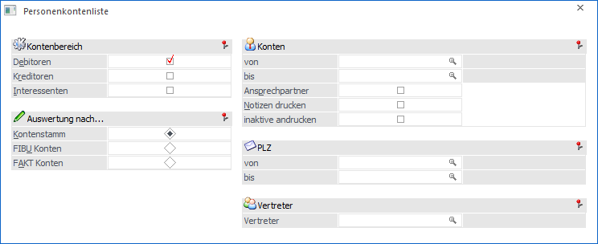
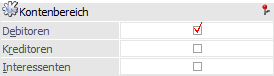
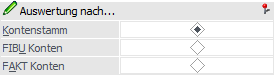
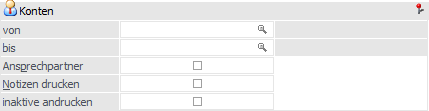
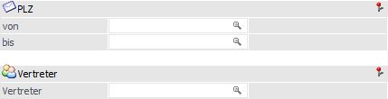

Im Menüpunkt…
1 WinLine FIBU
1 Auswertungen
1 Kontenlisten
1 Personenkontenliste
… und…
1 WinLine FAKT
1 Auswertungen
1 Stammdatenlisten
1 Personenkontenliste
… besteht die Möglichkeit der Ausgabe einer Personenkontenliste.

Kontenbereich

Ø Debitoren
Durch Aktivierung dieser Option werden bei der Ausgabe Kundenkonten berücksichtigt.
Ø Kreditoren
Durch Aktivierung dieser Option werden bei der Ausgabe Lieferantenkonten berücksichtigt.
Ø Interessenten
Durch Aktivierung dieser Option werden bei der Ausgabe Interessentenkonten berücksichtigt.
Hinweis
Wird neben der Option Interessent z.B. auch die "Debitoren" aktiviert, so werden neben den Kundenkonten nur die Interessenten des Typs "Kunden" ausgegeben. Bei der Aktivierung von "Kreditoren" und "Interessenten" hingegen nur Interessenten des Typs "Anfragelieferanten".
Auswertung nach…

Hier wird festgelegt, wie die Sortierung der Personenkonten erfolgen soll. Dazu gibt es drei Möglichkeiten:
Ø Kontenstamm
Die Sortierung erfolgt nach allen angelegten Kontenstämmen (Adresstämmen).
Ø FIBU Konten
Die Liste wird nach der FIBU-Kontonummer sortiert, wobei für jede FIBU-Kontonummer auch die dazugehörigen SUB-Konten angedruckt werden.
Ø FAKT Konten
Die Liste wird nach der FAKT-Kontonummer sortiert, wobei für jede FAKT-Kontonummer auch die dazugehörigen SUB-Konten angedruckt werden.
Konten

Ø Konten von / bis
Am dieser Stelle kann eine Einschränkung des Ausgabebereichs über die Kontonummer erfolgen. Je nachdem ob Debitoren oder Kreditoren ausgewertet werden sollen, gibt man hier die erste oder letzte Kunden- bzw. Lieferantennummer ein.
Ø Ansprechpartner
Durch Aktivieren der Option werden auch die Ansprechpartner zu den Personenkonten ausgegeben.
Ø Notizen drucken
Wird diese Option aktiviert, wird bei jedem Konto auch die Textinformation angedruckt, welche im Kontenstamm hinterlegt wurde.
Ø inaktive andrucken
Mit dieser Option kann festgelegt werden, ob auch inaktive Konten angezeigt werden sollen.
Weitere Selektion

Ø PLZ von / bis
Die Personenkontenliste kann auch nach Postleitzahlen eingeschränkt werden. In die Felder "von / bis" gibt man die erste und letzte PLZ ein, welche in die Auswertung miteinbezogen werden soll.
Ø Vertreter
Hier kann eine Selektion auf die Vertreter erfolgen. Auf der Personenkontenliste werden dann nur jene Konten ausgewertet, welche den eingegebenen Vertreter hinterlegt haben.
Buttons

Ø Ausgabe Bildschirm
Mit Hilfe des Buttons "Ausgabe Bildschirm" oder der Taste F5 wird die Auswertung am Bildschirm ausgegeben.
Ø Ausgabe Drucker
Durch Anwahl des Buttons "Ausgabe Drucker" wird die Auswertung am Drucker ausgegeben.
Ø Ende
Durch Anwahl des Buttons "Ende" bzw. der Taste ESC wird die Auswertung geschlossen.
Ø Filter bearbeiten
Durch Anklicken des Buttons "Filter bearbeiten" kann die Auswertung nach frei definierbaren Kriterien eingeschränkt werden.